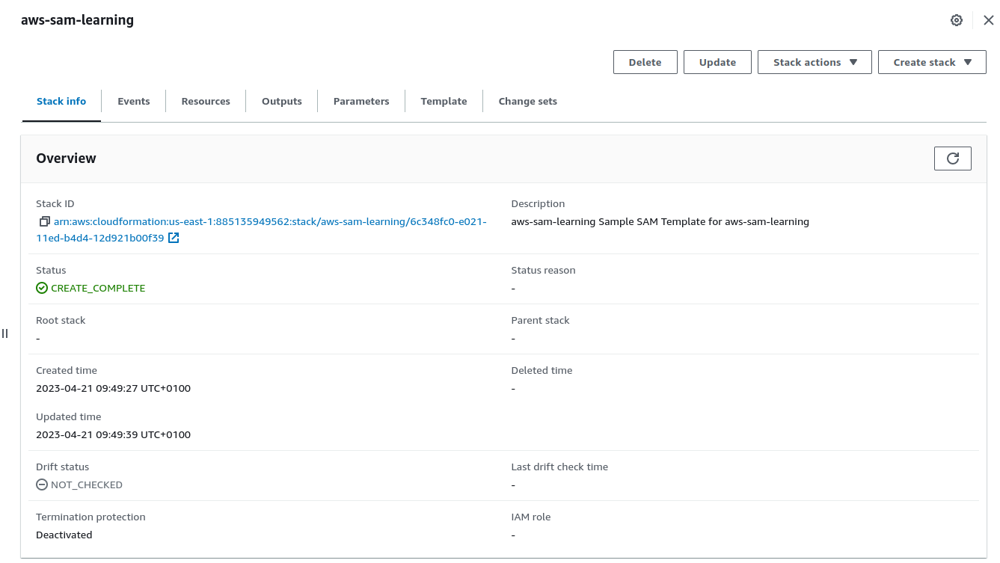

AWS SAM
SAM stands for serverless application model. It is a framework developed by AWS to simplify the process of building, deploying and managing serverless applications. It provides a concise syntax for defining the components of a serverless application, such as Lambda functions, API gateway and database tables.
The SAM infrastructure is defined in a YAML file which is then deployed to AWS. SAM syntax gets transformed into CloudFormation during the deployment process. (CloudFormation is a broader and more robust AWS tool for large, highly scaleable infrastructures).
Key features of SAM
- Single deployment configuration
- Integration with development tools
- Local testing and debugging
- Built on AWS CloudFormation
Main technologies required
Docker
Whilst SAM can be used to create a deployable file for AWS it can also be run as a container for local development with Docker.
AWS CLI
This is installed using Python and allows you to interact directly with AWS via the command-line.
AWS SAM CLI
See https://docs.aws.amazon.com/serverless-application-model/latest/developerguide/install-sam-cli.html
Setting up credentials for the AWS CLI
You require an access key for the given IAM user. You should create an IAM account specific to the project with bounded permissions.
aws configure
AWS Access Key ID [None]: AK*******
AWS Secret Access Key [None]: ukp******
Default region name [None]:
Default output format [None]:This information can be found in the Security Credentials section of the given IAM user:

Switching between credentials
You should set up a different IAM user for each project.
You can do this with:
aws configure --profile <profile-name>This will then ask you to add the credentials for the user.
You can switch between different credentials for the user as follows:
AWS_PROFILE=<profile-name> sam build
Starting a SAM project
First create a directory for your project which will serve as the repository:
mkdir aws-sam-learning
cd aws-sam-learningThen we can use the sam cli to bootstrap the project:
sam init --runtime nodejs16.xWe can just click through and accept the basic HelloWorld Lambda.
This will create the Lambda as well as an API Gateway trigger URL.
template.yaml
This is autogenerated and details the main constituents of the project. There are lots of fields but the most important are the following:
HelloWorldFunction:
Type: AWS::Serverless::Function
Properties:
CodeUri: hello-world/
Handler: app.lambdaHandler
Runtime: nodejs16.x
Architectures:
- x86_64
Events:
HelloWorld:
Type: Api
Properties:
Path: /hello
Method: getThis details the location of the handler function which is contained at the path hello-world/app.js:
exports.lambdaHandler = async (event, context) => {
try {
// const ret = await axios(url);
response = {
statusCode: 200,
body: JSON.stringify({
message: "hello world",
// location: ret.data.trim()
}),
};
} catch (err) {
console.log(err);
return err;
}
return response;
};It also lists the get event that we can use to call API Gateway and trigger the Lambda.
The full template is below:

Adding our own code
We will create our own function and API Gateway trigger.
We will place our function after the existing HelloWorldFunction
ClockFunction:
Type: AWS::Serverless::Function
Properties:
CodeUri: clock/
Handler: handler.clock
Runtime: nodejs16.x
Events:
ClockApi:
Type: Api
Properties:
Path: /clock
Method: getWe can test the syntax with:
sam validateJust like with HelloWorld, we will create a directory for this function: clock and we will initialise it as an npm project.
mkdir clock
cd clock
npm initWe will use handler.js as our root, handler function.
We have said in the template file that our Handler: handler.clock, therefore the main function in the handler module should be clock:
const moment = require("moment");
exports.clock = async (event) => {
console.log("Clock function run");
const message = moment().format();
const response = {
statusCode: 200,
body: JSON.stringify(message),
};
return response;
};The directory structure is as follows:

When we call the API Gateway path /clock with GET, our function will be triggered.
Deploying the project
We will now deploy our project to AWS from the local environment.
The process is as follows:
- Build
- Package
- Deploy
Build
We need to install the runtime dependencies for the function. We do this by running sam build. This ignores test files and development dependencies and installs the project dependencies and source files to a temporary subdirectory.

The build directory is .aws-sam/build/. There will be a subdirectory for each of our files.
Package
As noted, CloudFront handles the deployment of the application. It can only receive one file as an input. The packaging process consists in creating that single file.
The packaging proces will first archive all of the project artefacts into a zip file and then upload that to S3. A reference to this S3 entity is then provided to CloudFormation.

The command is as follows:
sam package
--template-file template.yaml
--output-template-file pkg.yml
--region eu-west-1This will automatically create a hashed bucket name for you in S3 (I have tried to add my own naming but it doesn’t comply.)
Local development with Docker
In order to work with your application locally without actually sending requests to AWS and using credit, you can run a local instance.
See Local AWS Development with SAM.
Deploy
Once you have packaged the app you can deploy with sam deploy --guided. This will talk you through the defaults and will deploy the package to CloudFormation. In CloudFormation each individual project is called a stack.
If we then go to Cloud Formation we will see the deployed application.

Call the endpoint
If we now go to the Lambda console, we will see our function listed, and the API Gateway endpoint under triggers:

We can then call this from Postman to check everything is working as it should: